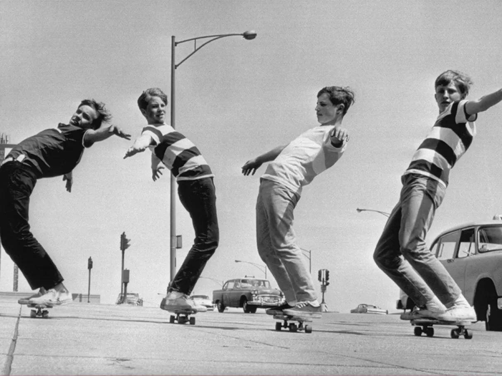
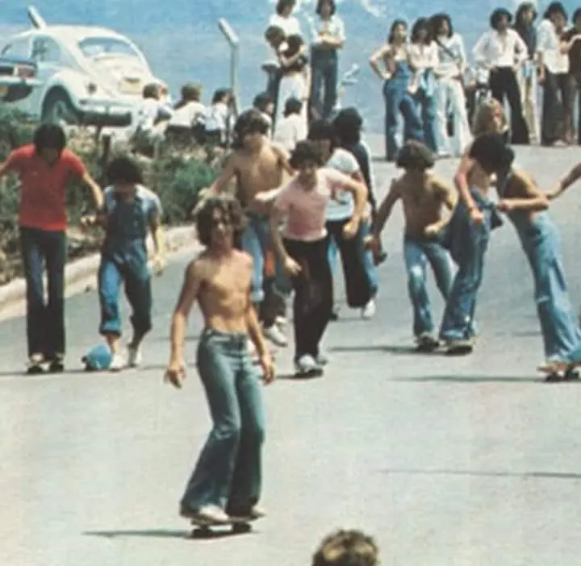
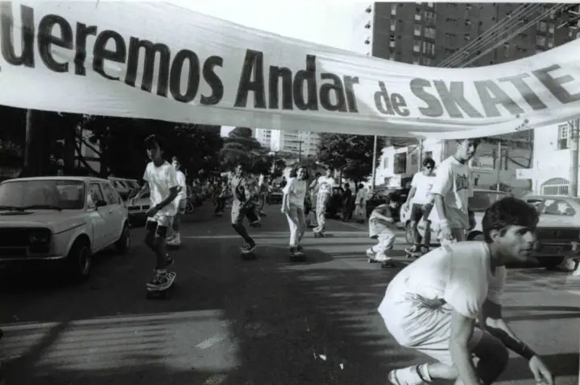
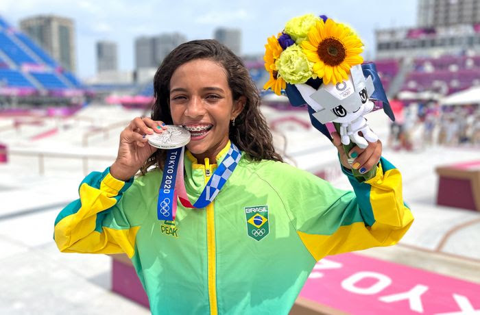

LINHA DO TEMPO
De uma tábua com rodas de patins às arenas olímpicas: percorra sete décadas de quedas, reinvenções e conquistas que transformaram um passatempo de surfistas em cultura global.

O "Surfe no Asfalto" (Anos 1950): Surgiu na Califórnia, quando surfistas colocaram rodinhas de patins em tábuas de madeira para simular as manobras do mar nas calçadas (sidewalk surfing).
A Revolução Tecnológica (1972): Frank Nasworthy criou as rodas de poliuretano. Antes disso, as rodas eram de ferro ou argila, o que tornava o skate lento e perigoso no asfalto irregular. Com o poliuretano, o skate ganhou aderência e velocidade para encarar a cidade.
Os Z-Boys e as Piscinas (Anos 1970): Em Venice Beach (Califórnia), o grupo Z-Boys revolucionou o esporte durante uma seca em 1976, invadindo quintais para andar em piscinas vazias. Isso criou a atitude rebelde e a cultura de apropriar-se de espaços urbanos abandonados.

Os Pioneiros: O skate chegou ao Brasil no início dos anos 1960, trazido por filhos de diplomatas e turistas no Rio de Janeiro (especialmente na Zona Sul) e em São Paulo.
Produção Nacional: Como importar era caro e difícil, surgiram as primeiras marcas brasileiras na década de 1970 (como a Surya e a Waimea), além da construção artesanal de skates pelos próprios praticantes.
Primeiras Pistas: Em 1976, foi inaugurada a primeira pista de skate da América Latina, em Nova Iguaçu (RJ), marcando o início da profissionalização por aqui.

O Ollie e a Rua (EUA): Nos anos 1980, com o fechamento de muitas pistas nos EUA, o skatista Rodney Mullen adaptou o ollie (salto sem usar as mãos) para o solo plano. Isso permitiu pular calçadas, bancos e corrimãos, consolidando o street skate (skate de rua).
A Proibição no Brasil (1988): Enquanto o skate explodia nas ruas brasileiras, o prefeito de São Paulo, Jânio Quadros, proibiu a prática do esporte na cidade, alegando danos ao patrimônio público e risco aos pedestres, chegando a apreender skates.
Resistência e União: A proibição gerou uma reação histórica. Skatistas organizaram protestos e fundaram a UBS (União Brasileira de Skate), com nomes como Jorge Kuge e Cezar Gordo. A luta derrubou a proibição na gestão seguinte (Luiza Erundina) e fortaleceu a identidade política e urbana do skate brasileiro.
Picos Icônicos: Locais públicos tornaram-se templos do skate nacional, como a Praça Roosevelt e o Vale do Anhangabaú (em São Paulo), e a Praça XV (no Rio de Janeiro).
Invasão Brasileira no Exterior: Mesmo com menos estrutura, brasileiros passaram a dominar campeonatos mundiais, exportando um estilo técnico e criativo forjado nas calçadas irregulares do Brasil.
Bob Burnquist: Maior medalhista da história dos X Games e referência mundial no vertical e na mega-rampa.
Sandro Dias (Mineirinho): Hexacampeão mundial e ícone da modalidade vertical.
Rodrigo TX e Luan Oliveira: Referências globais que levaram o estilo do street brasileiro ao topo do mundo.

Olimpíadas de Tóquio (2021): O skate estreou como esporte olímpico nas modalidades Street (pista que imita obstáculos de rua) e Park.
Protagonismo do Brasil: O país conquistou três medalhas de prata na estreia — com Rayssa Leal (que se tornou a medalhista olímpica mais jovem do Brasil, aos 13 anos), Kelvin Hoefler e Pedro Barros. Nos Jogos de Paris (2024), Rayssa conquistou o bronze, consolidando o skate como um dos esportes mais populares do país.